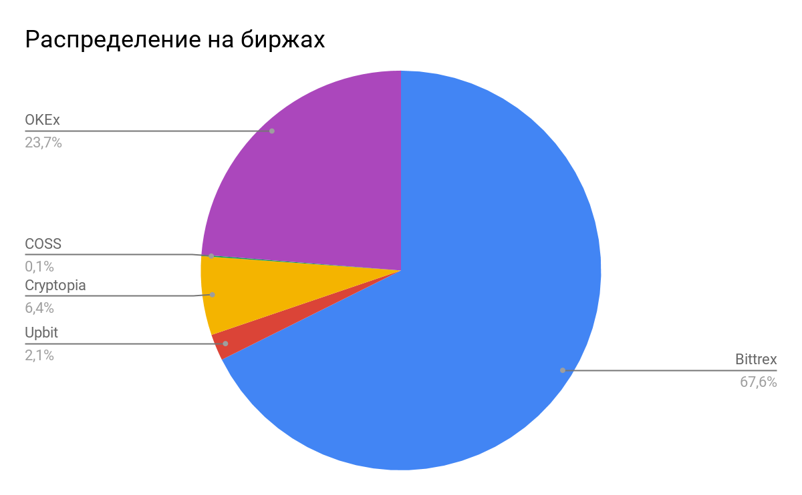
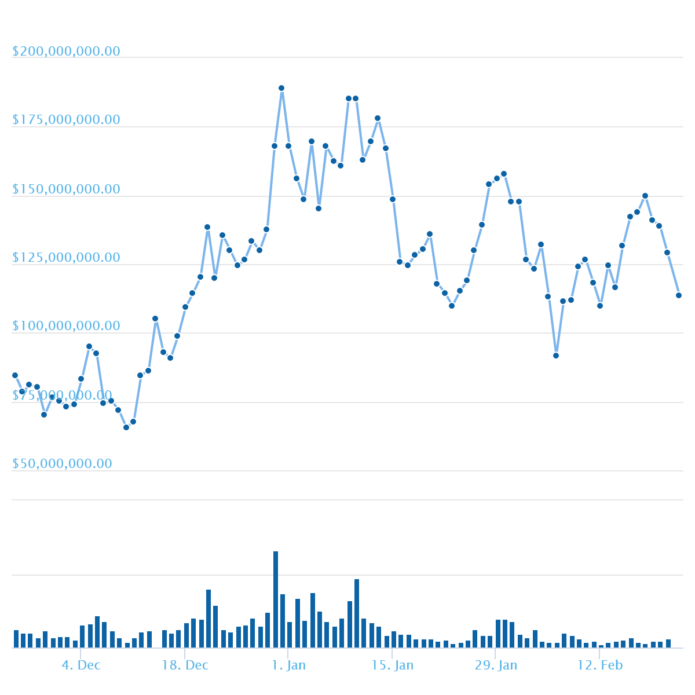
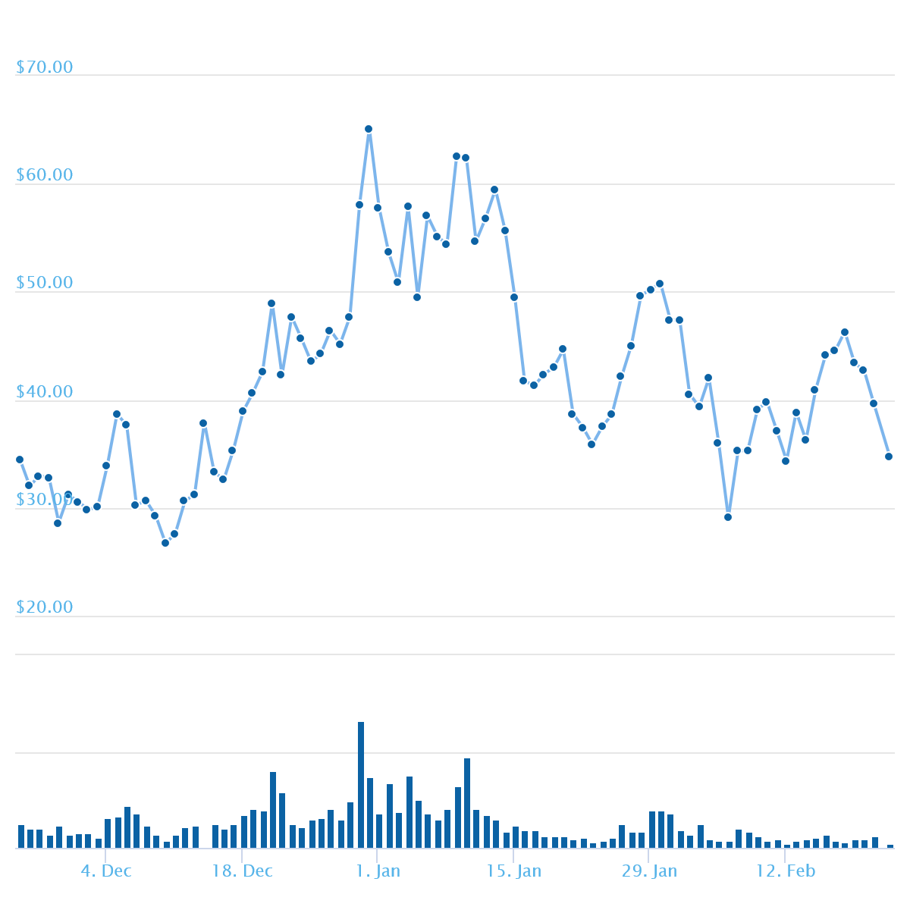

ZenCash появилась в результате раскола ZCash – сначала появилась криптовалюта Zclassic (ZLC), а затем ее хардфорк - ZenCash (ZEN).
Zcash был первой криптовалютой, использовавшей технологию zk-snarks, суть которой – в проведении защищенных транзакций. В первые четыре года существования проекта 20% всех эмитированных монет оставались в руках команды разработчиков. Не все были согласны с таким распределением, поэтому появилось следующее поколение разработчиков, которые разделили Zcash и появилась новая монета Zclassic. Zclassic упразднил вознаграждение разработчиков и дал майнерам 100% вознаграждения за добычу. Развитие Zclassic зависело только от энтузиазма, у проекта не было собственных средств для обеспечения постоянного развития. Именно тогда Роб Виглионе, Рольф Верслюис и Джошуа Йобут решили разделить Zclassic и создать его улучшенную версию - ZenCash.
ZenCash - конфиденциальная распределенная платформа для коммуникаций, транзакций и публикаций. Она предназначена для приватной финансовой деятельности, возможности приватного общения при проведении транзакций, безопасной и анонимной публикации документации. Zen использует глобальное сообщество для создания частной и безопасной платформы для мгновенных коммуникаций и транзакций.
ZenCash был запущен 23 мая 2017 года.
Механизмы и принципы эмиссии
Общее количество токенов: 21 миллион. Торговое название - ZEN. Токены эмитируются в процессе добычи блоков, награда за один блок составляет 12,5 ZenCash. Снижение размера награды вдвое происходит каждые 4 года.
Распределение прибыли и расходов за проведение транзакции по каждому PoW-блоку среди майнеров и других участников следующее:
88% - майнеру;
5% - одной или нескольким ДАО;
3,5% - операторам защищенных узлов;
3,5% - ядру проекта.
Каждому, кто владел Zclassic до блока 110’000, были автоматически присвоены ZEN 1:1.
Механизмы обеспечения консенсуса
Алгоритм хеширования Equihash является чувствительным к объему оперативной памяти алгоритмом PoW (доказательства работы). Он был разработан Александром Бирюковым и Дмитрием Ховратовичем в Университете Люксембурга.
В системе используется алгоритм корректировки сложности Digishield V3.
Архитектура системы
Передовая криптография и доказательство нулевого знания включают полностью анонимную одноранговую (Peer-to-peer, P2P) связь с ZenCash. Шифрование с нулевым знанием позволяет использовать неразрешимую зашифрованную связь для распространения по всей сети, обеспечивая защиту от атак такого типа, как отказ в обслуживании и спам. Шифрование с нулевым знанием позволяет осуществлять частную экономическую деятельность, когда получатель, отправитель, сумма и данные о деятельности остаются конфиденциальными.
Зашифрованный сетевой дизайн ZenCash устойчив к анализу трафика и метаданных.
В ZenCash есть возможность создания как открытых транзакций, которые содержат информацию о получателе, отправителе и сумме платежа, так и защищенные транзакции, которые эту информацию скрывают.
Для поддержки инфраструктуры используются защищенные узлы (Secure Nodes), которые выполняют следующие функции:
Обеспечение шифрования всех данных, передаваемых между узлами сети.
Обслуживание системы цепочки блоков.
Обеспечение шифрования с использованием сертификатов для электронных кошельков.
Узлы получают вознаграждение в ZEN за свою работу. Они подчиняются одной или нескольким DAO (Decentralized Autonomous Organization).
DAO отвечают за обеспечение работоспособности и постоянное улучшение системы и выполняют следующие функции:
Распространение информации о ZenCash.
Система внесения предложений и голосования.
Система отчетов и мониторинга.
Ядро проекта включает в себя основателей ZenCash, которые:
Управляют проектом на стадии запуска и первичного развития.
Оплачивают расходы на развитие и обслуживание системы.
Управляют интерфейсом.
Лицензирование и юридические аспекты
В официальной документации отсутствует информация о том, как команда собирается решать юридические вопросы по взаимоотношениям с регуляторами. Напротив, проект позиционируется как оппозиционный к любой попытке регулирования.
ZenCash называют “оплотом анонимности”. Разработчики ZenCash утверждают, что данный форк по уровню конфиденциальности является самым лучшим вариантом среди известных криптовалют. Весь его функционал направлен на соблюдение полной анонимности и конфиденциальности.
Производительность и масштабируемость
Официальной информации о производительности системы не найдено. Но, поскольку используется PoW алгоритм обеспечения консенсуса, можно предположить, что скорость очень маленькая.
Встроенные механизмы и функции
Для обеспечения высокого уровня защищенности и конфиденциальности в ZenCash используются следующие инструменты:
ZenTalk - инновационная система отправки защищенных сообщений от одного ко многим пользователям с использованием блокчейна для постоянного хранения сообщений.
ZenHub - инструмент для анонимного хранения документов в рамках таких платформ, как GNUnet и IPFS.
ZenHide - система обеспечения всестороннего доступа и обхода блокировки криптовалют через фронтирование домена.
ZenCash позволяет создавать 2 типа транзакций:
T-транзакции представляют собой классические транзакции, информация о которых сохраняется в цепочках блоков, а доступ обеспечивается при помощи уникального ключа электронного кошелька.
Z-транзакции отправляются на защищенные адреса. Информация об остатке на счете остается закрытой. При отправке средств на один или несколько защищенных адресов информация также остается скрытой. Однако, в случае отправки на один из открытых адресов, информация о токене в цепочке блоков будет раскрыта, позволяя определить общей размер полученных средств. При этом информация об отправителях платежа и их количестве остается закрытой.
Помимо защищенных узлов, о которых рассказывалось выше (см. п. Архитектура), в сети присутствуют и стандартные узлы. Приложение ZenCash поддерживает работу на любых серверах под управлением Linux, Mac или Windows. Клиент выступает как в роли узла, так и в роли кошелька.
Кошелек может может быть настроен для работы с любым узлом ZenCash, а также для подключения только к защищенным узлам для обеспечения надежной защиты передаваемых данных и информации.
Т.к. ZenCash представляет собой полностью децентрализованную систему с открытым исходным кодом, разработчики ожидают появления большого количества приложений от сторонних разработчиков, которые будут встроены в общую экосистему.
Также у команды есть план по созданию собственных приложений, таких как: приложения для узлов, майнинговые пулы, приложения для управления проектом, системы мониторинга, система оплаты, различные кошельки.
базовое по пользователя
На данный момент есть следующие кошельки:
Веб-кошелек
Мобильный кошелек под Android
Бумажный кошелек
Кошельки для Windows, Mac OS и Linux:
На GitHub можно найти открытый исходный код и следить за ходом разработки:
https://github.com/ZencashOfficial
В данный момент сеть защищенных узлов проходит бета тестирование. В настоящее время существует 170 тестовых защищенных узлов. По мнению основателей будет более 1000 защищенных узлов к концу первого квартала 2018 года. Такой большой рост ожидается за счет того, что любой, кто выступает защищенным узлом, будет иметь право на долю 3.5% от майнинга.
Возможности интеграции
ZenCash совместим с другими блокчейнами. Предположим, если вы хотите создать смарт-контракт на Etherium, но платежи обрабатывать через ZenCash, то в будущем вы сможете сделать это.
Кроме того, есть возможность создавать свои собственные приложения поверх системы ZenCash.
Распространение
Основной объем торговли токеном ZEN приходится на биржу Bittrex (67,6%).
Динамика капитализации
Капитализация ZEN на данный момент (22.02.18) составляет чуть более $112 млн.
График по капитализации за последние 3 месяца:
Динамика цены токена
Токен ZEN начал торговаться по $7-9. Резких скачков и спадов за все лето не наблюдалось. К началу сентября курс подрос до $12,8. А 19 октября был резкий скачок цены до $21,09 после чего курс ниже $16,5 уже не опускался. Причиной столь стремительного роста явилось упоминание проекта ZenCash в отчете Palm Beach Confidential. В конце ноября значительный рост связан скорее всего с переносом Secure Nodes из тестовой в мэйн-сеть. 28 января ZenCash был зарегистрирован на Upbit Exchange, 30 января 2018 токен стал торговаться на OKEx, что вызвало очередной всплеск цены.
Максимальное значение цены было достигнуто 31 декабря 2017 года и составило $65,14. Текущая цена токена $34,33 (22.02.18).
График по цене токена за последние 3 месяца:
Анализ Road Map и White Paper
White Paper: https://ru.zensystem.io/assets/Zen%20White%20Paper.pdf
На официальном сайте документ представлен только на английском языке. Сам сайт доступен на английском и на русском. Чтобы найти “белую бумагу” на русскоязычной версии сайта, нужно кликнуть по пункту меню “Информационный бюллетень”.
Качество документа высокое: он содержит всю необходимую техническую и экономическую информацию.
Road Map содержит план работ до 2019 года с указанием этапов, но без указания конкретных сроков, только год.
Анализ команды проекта и аффилированных лиц
Команда
В команду ZenCash входят:
Rob Viglion – экономист;
Rolf Velsluis – бизнес операции;
Jane Lippencott – специалист по продвижению в Азии;
Carlo Vicari – специалист по развитию бизнеса.
Также в команду ZenCash входит Crypto Media Hub, который занимается созданием и продвижениям бренда ZenCash в массы.
Разработчики очень активны, постоянно работают, общаются и взаимодействуют с сообществом, каждые две недели выходит онлайн трансляция, где подводят итоги и в конце любой может задать вопрос напрямую команде.
Инвесторы
В качестве инвесторов были привлечены известные лица, которые успели уже вложить свой капитал в компании с мировым именем:
Навал Равикант выступал ранее как инвестор транспортной компании Uber и социального проекта Twitter;
Барри Силберт является главным учредителем финансового проекта SecondMarket;
Роджер Вер создал сеть Blockchain.info, а также способ расчетов, известный как Bitpay.
Это лишь часть имен, которые выделили свои средства для успешного запуска проекта.
Партнеры
10 января ZenCash объявил о партнерстве с компанией Input Output Hong Kong (IOHK).
Ближайшие конкуренты
ZenCash это не единственная криптовалюта обеспечивающая полную анонимность, в этом аспекте им придется делить пользователей с такими криптовалютами как DASH, Monero, Zcash, Bytecoin, ShadowCash, Boolberry и др.
С технической стороны ZenCash конкурирует с другими криптовалютами с нулевым разглашением на базе zk-SNARKs.
Если говорить о защищенности информации, то ZenCash конкурирует с такими проектами, как Zerocoin, CryptoNote, RingST и другими системами защиты данных, каждая из которых обслуживает довольную узкую нишу в мире криптовалют.
Т.к. проект предполагает создание системной архитектуры, в рамках которой будет использоваться токен ZenCash, то тут в список конкурентов добавляются другие комплексные платформы такие, как: Ethereum, Ethereum Classic, NEM, Lisk, Synereo, которые используются для создания децентрализованных приложений (dApps). При этом Zen имеет более узкий список возможных вариантов использования по сравнению с системами типа Ethereum, в которых используется полный по Тьюрингу вариант программирования. Своими конкурентными преимуществами здесь команда проекта называет 2 фактора: “децентрализованные приложения могут быть реализованы на базе самой защищенной криптовалюты в мире” и гибкость, которая позволяет сотрудничать с партнерами из разных сегментов сети.
С точки зрения управления системой путем голосования, у проекта также есть конкуренты: Dash, Bitshares, Decred.
Идеологически Zen является прямым конкурентом официальных валют и банковских систем, обеспечивая возможность предоставления финансовых услуг лицам, лишенным прямого доступа к финансовым и банковским сервисам.
ZenCash – один из удачных форков довольно популярной криптовалюты, имеющей репутацию одного из лидеров среди анонимных монет. Пока она далеко позади своих основных конкурентов, но стремительность ее роста в последние месяцы позволяет делать оптимистичные прогнозы.
Среди плюсов проекта можно отметить следующее:
Устойчивая финансовая модель. Команда не строит проект в расчете на голый энтузиазм ее последователей. Разработка получает финансирование из своего фонда, куда попадает 8,5% из добытого майнерами.
Децентрализованные команды разработчиков позволяют сообществу голосовать по направлениям развития проекта исключая авторитарные решения.
Сквозное шифрование и обход блокировки домена позволяют платформе быть полностью независимой от государственных регуляторов.
Кроме этого, в пользу солидных перспектив данной криптовалюты говорит и наличие новых банкоматов, установленных в представительствах National Restaurant Association. Данные системы позволяют принимать платежи и осуществлять обналичивание монеты в долларах США.
Официальный сайт:
https://zensystem.io/
Блог:
https://blog.zensystem.io/
Slack:
https://slackinvite.zensystem.io/
Форум:
https://forum.zensystem.io
Telegram:
https://t.me/zencash
Обсуждение на Bitcointalk:
https://bitcointalk.org/index.php?topic=1819977.0
YouTube Канал:
https://www.youtube.com/channel/UCQ0v_lUnZHIKUQUXJzfgqOg
Reddit:
https://www.reddit.com/r/ZenSys/
Facebook Страница:
https://www.facebook.com/zencash/
Блог на Medium:
https://medium.com/zencash